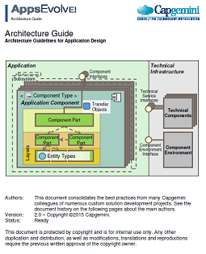
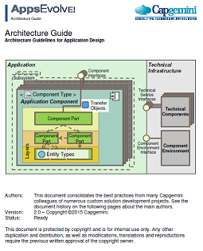

The OASP is a solution to building business applications which combine best-in-class frameworks and libraries as well as industry proven practices and code conventions. It provides a complete reference implementation and IDE for your well architected, robust and modern web application. It is open and free - see our terms of use.
OASP consists of two main building blocks...
The server implemented with Java and Spring provides services, business logic and persistence.
The client implemented with JavaScript provides a responsive application frontend.

 

.. based on years of CSD-architecture knowledge: Quasar (public) and Architecture Guide (IP).

Separation of concerns through strict layering and thinking in components.

OASP patterns provide best practices on commonly available open source technology ...

... you will find extensive guidelines how to implement your solution the right way.

OASP is built by orchestratation of commonly known and estabished OS-technologies.

Highly integrated development environment, from model to CI.

Technical reference Web-UI using open source JS-Framework Angular JS and Bootstrap